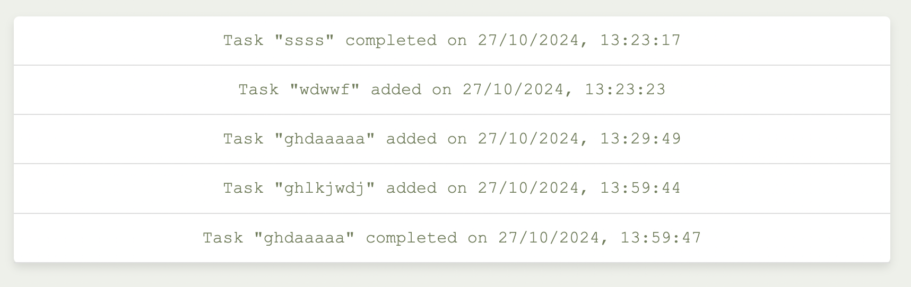

Github link and version control
Find here the Github link:

These are some of the commits during the development process

Coding decisions
Testing strategy
Github link and version control
Challenges faced
Inspiration links - Sources
This project is a Task Management Application that allows users to create, edit, delete, and filter tasks on a simple interface. The effortly team used JavaScript for all dynamic functionality and avoided inline onclick attributes to keep the HTML file clean. Also, both the CSS and the Javascript code is organized in a CSS and in a Javascript file respectively. This approach improves readability, maintainability, and scalability.
Each row for each task is generated using generateTaskRow. For each operation, there is a different function: addTask for adding, markTaskAsComplete for marking complete, editTask for editing and deleteTask for deleting tasks. These operations are updated every time according to the user and the changes are saved in localStorage. With localStorage tasks can persist across sessions. Additionally, saveTasksToLocalStorage and loadTasksFromLocalStorage keep tasks and activity data available across page refreshes. Users can filter according to the status and sort accroding to the due date/ name their tasks with filterTasks and sortTasks. All the buttons are managed through the attachButtonListeners. Also, the effortly team made sure to create a user friendly interface. For example, after adding or updating a task, the form gets cleared with the help of clearForm so that it is prepared for the next task. Furthermore, there is a validation check in addTask that ensures that the required fields are filled, providing feedback via alerts in case of false input. To make sure that the latest activity will be updated we used logActivity, which records actions with timestamps, maintaining a list of the latest five actions (by removing oldest entry when activity record is bigger than 5). The javascript files use $(document).ready to ensure all DOM elements are loaded before any script is executed. This helps to prevent errors when interacting with DOM elements that are not yet rendered.
Of course, during the development proccess the effortly team did a research to get inspiration and learn new things. Some of the inspiration links can be found in the the section Inspiration links - Sources.
One of the testing methods our team used is erasing some lines of code in order to check for code that is useless (duplicate). Moreover, the effortly team snatched the webpage to check if it is responsive. Of course the webpage was checked across different browsers. Additionaly, the dark- mode was tested multiple times in each webpage to make sure that it functions efficiently. See some of the testing examples:
Scenarios such as adding tasks without complete information and editing tasks were tested to confirm smooth functionality. Moreover, we added tasks to check how filtering and sorting functionalities work.
For example, one of the things we had to test was the relationship between the add new task form and the latest activity. We tested each feature (task addition, editing, deleting, and filtering) individually to ensure functionality and user interface elements behaved as expected.
For the contact page, we tested many functionalities. For, example we tested if the alert message is working correctly.
Overall, this project was very fun to develop. The challenges we faced inspired us to become better and to learn more about web development. One of the biggest challenges was to add the Javascript and JQuery code. We started the development of our webpage before the Javascript/ JQuery lectures, so we had to re-do some parts of the code. This process was tricky for us because we had to avoid having blocks with the same code. The Javascript/ JQuery part was challenging, because it was completely new for us and required personal research and the help of AI to become completely understandable. The biggest challenge was to save the tasks and the activity. By using JSON stringify and parse methods we made sure that the array is stored. JSON.stringify() converts an object or an array into a JSON string, while JSON.parse() converts a JSON string back into an object or an array. In that way we can store, retrieve and manipulate the data (in this case the tasks / activity). So, when a task is added, edited or marked as complete, the code saves the updated tasks to Local Storage.